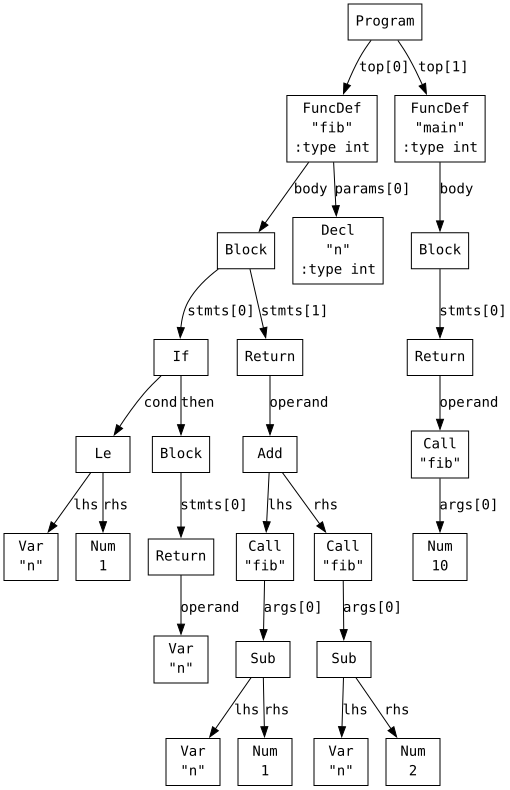
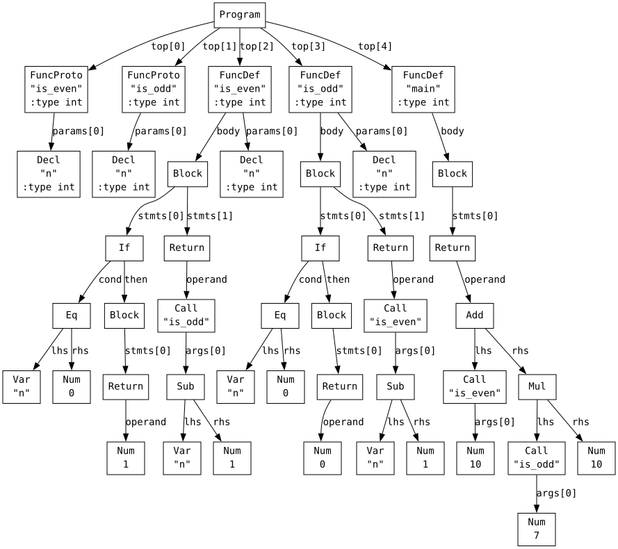
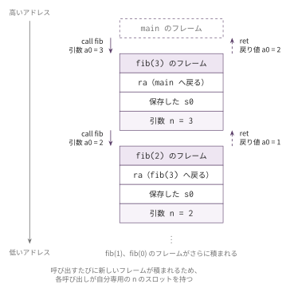
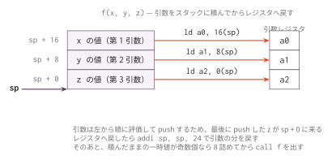
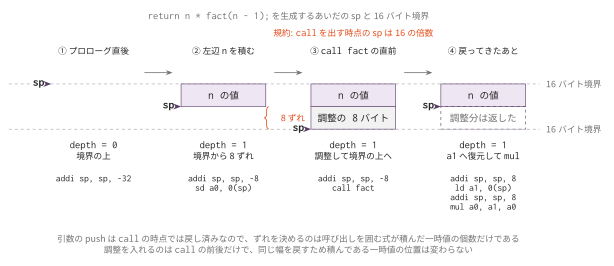

コマ6: 関数呼び出し・再帰
今日のゴール
ユーザー定義関数の定義・呼び出し・再帰呼び出しを実装する。
コマ5までは、main 関数だけを扱ってきた。
この回では、複数の関数を定義し、それらを呼び出せるようにする。
int fib(int n) {
if (n <= 1) {
return n;
}
return fib(n - 1) + fib(n - 2);
}
int main() {
return fib(10);
}目標は、引数の受け渡し、関数呼び出し call、戻り値の受け取り、再帰呼び出しを正しく生成できるようにすることである。
この回で扱う範囲
対象にするプログラムは、main に加えてユーザー定義関数を含むものに限定する。
| 種類 | 例 |
|---|---|
| 関数定義 | int add(int a, int b) { return a + b; } |
| 関数呼び出し | add(3, 5) |
| 再帰呼び出し | fib(n - 1) |
| 相互再帰 | is_even / is_odd の互いの呼び出し |
| 関数宣言 | int is_even(int n); |
| 最大8個までの引数 | clamp(val, lo, hi) |
これまでに扱ったすべての機能（変数、式、制御構文）を、main 以外の関数内でも使用できる。
この回までの言語仕様（EBNF）
この回までに書けるプログラムの文法を、累積の形でまとめる。
記法と最終形の全体像は
language_spec.md の「形式文法（EBNF）」を参照。
scalar_type ::= 'int' /* ポインタはコマ7、char はコマ8 */
obj_type ::= scalar_type
ret_type ::= scalar_type /* void はコマ7 */
program ::= external_decl { external_decl }
external_decl ::= func_proto
| func_def /* struct 定義はコマ12、グローバル変数はコマ13 */
var_decl ::= obj_type IDENT ';'
param ::= scalar_type IDENT
param_list ::= param { ',' param }
func_proto ::= ret_type IDENT '(' [ param_list ] ')' ';' /* '...' はコマ10 */
func_def ::= ret_type IDENT '(' [ param_list ] ')' func_body
func_body ::= '{' { var_decl } { stmt } '}'
stmt ::= expr_stmt
| block
| if_stmt
| while_stmt
| for_stmt
| 'break' ';'
| 'continue' ';'
| 'return' expr ';'
expr_stmt ::= [ expr ] ';'
block ::= '{' { stmt } '}'
if_stmt ::= 'if' '(' expr ')' stmt [ 'else' stmt ]
while_stmt ::= 'while' '(' expr ')' stmt
for_stmt ::= 'for' '(' [ expr ] ';' [ expr ] ';' [ expr ] ')' stmt
expr ::= assign_expr
assign_expr ::= unary_expr '=' assign_expr /* 右結合 */
| cond_expr
cond_expr ::= binary_expr [ '?' expr ':' cond_expr ] /* 右結合 */
binary_expr ::= unary_expr { bin_op unary_expr }
bin_op ::= '*' | '/' | '%' /* 論理 && || はコマ13 */
| '+' | '-'
| '<' | '>' | '<=' | '>='
| '==' | '!='
unary_expr ::= primary_expr
| '-' unary_expr
| '++' unary_expr
| '--' unary_expr
primary_expr ::= INT_LITERAL
| IDENT '(' [ arg_list ] ')'
| IDENT
| '(' expr ')'
arg_list ::= assign_expr { ',' assign_expr }この回までの二項演算子の優先順位（高い順）:
| 優先順位 | 演算子 | 結合 |
|---|---|---|
| 1（高） | * / % |
左 |
| 2 | + - |
左 |
| 3 | < > <= >= |
左 |
| 4 | == != |
左 |
表の読み方はコマ1の「木の形は規則で決まっている」と
language_spec.md の「演算子」を参照。
main だけを書いていたこれまでと違い、program が複数の外部宣言を持てるようになった。
引数なしは () と書く（(void) は受理しない）。
字句トークンの定義はどの回でも同じであるため、ここでは繰り返さない。
language_spec.md の「字句トークン」を参照。
AST を確認する
関数定義
python3 scaffold/parse_viewer.py sessions/06_functions_recursion/tests/target.ctarget.c の中身は、冒頭に挙げた fib のプログラムと同じである。
(program
(funcdef "fib" :type int
(params (param "n" :type int))
(block
(if
(cond
(le (var "n") (num 1)))
(then
(block
(return (var "n")))))
(return
(add
(call "fib"
(args
(sub (var "n") (num 1))))
(call "fib"
(args
(sub (var "n") (num 2))))))))
(funcdef "main" :type int (params)
(block
(return
(call "fib"
(args (num 10)))))))
新しく登場するノードは次の通り。
| S式 | Node での表現 |
意味 |
|---|---|---|
(call "f" (args ...)) |
ND_CALL |
関数 f の呼び出し |
(param "n" :type int) |
ND_FUNCDEF.params[0] |
関数のパラメータ名と型 |
(funcproto "f" :type int ...) |
ND_FUNCPROTO |
関数宣言 |
ND_CALL は式である。
codegen() で処理し、結果は a0 に置く。
相互再帰のAST
python3 scaffold/parse_viewer.py sessions/06_functions_recursion/tests/mutual_rec.cこのプログラムは、冒頭に宣言だけを2つ置き、そのあとに定義が続く（以下は本体を1行に詰めて示す）。
int is_even(int n);
int is_odd(int n);
int is_even(int n) { if (n == 0) { return 1; } return is_odd(n - 1); }
int is_odd(int n) { if (n == 0) { return 0; } return is_even(n - 1); }
int main() { return is_even(10) + is_odd(7) * 10; }S式の全文は上の parse_viewer.py で確認できる。見どころは冒頭で、
定義より先に宣言が funcproto として現れる点である。
(program
(funcproto "is_even" :type int
(params (param "n" :type int)))
(funcproto "is_odd" :type int
(params (param "n" :type int)))
(funcdef "is_even" ...) ; 中身は fib と同じ形（if と call）
(funcdef "is_odd" ...)
(funcdef "main" ...))
相互に呼び合う関数では、先に funcproto が出る。
これは、宣言より前に関数定義を書く必要がある場合に、Parserが宣言を前方に移動するためである。
RV64の関数呼び出し規約
関数呼び出しでは、呼び出す側と呼び出される側の間で、どのレジスタを何に使うかを決めておく必要がある。 この取り決めを ABI の一部として扱う。
この回で使う主な約束は次の通り。
| 役割 | レジスタ | 説明 |
|---|---|---|
| 第1引数 | a0 |
呼び出し側がセットする |
| 第2引数 | a1 |
同上 |
| 第3引数 | a2 |
同上。以下 a7 まで |
| 戻り値 | a0 |
呼び出された側がセットする |
| 戻り先アドレス | ra |
call 命令が自動セットする |
| フレームポインタ | s0 |
呼び出し前後で同じ値に復元する |
| スタックポインタ | sp |
call 時に16バイト境界に揃える |
関数を呼び出すとき、call f という命令を使う。
call fibこの命令は、次の2つのことを行う。
- 次の命令のアドレスを
raに保存する fibラベルへジャンプする
呼び出された関数は、最後に ret を実行する。
ret は ra に保存されたアドレスへ戻る。
したがって、再帰を含む関数呼び出しを行うときは、自らの ra を関数の先頭で保存し、末尾で復元する必要がある。
これはコマ3のプロローグ・エピローグがすでに行っている。

関数を呼ぶたびに新しいフレームが低いアドレス側へ積まれ、ret するたびに1つ上のフレームへ戻る。
各呼び出しが自分専用の引数スロットを持つため、再帰しても n の値が混ざらない。
引数を受け取る側
関数が呼ばれた直後、引数は a0, a1, … に入っている。
int add(int a, int b) {
return a + b;
}この関数が add(3, 5) と呼ばれた場合、関数に入った直後は次の状態になる。
| レジスタ | 内容 |
|---|---|
a0 |
第1引数 3 |
a1 |
第2引数 5 |
ただし、以後の計算で a0 や a1 はすぐ上書きされる。
そのため、関数の先頭で引数をローカル変数と同じようにスタックへ保存する。
gen_func() では、ローカル変数を集める前に、まず funcdef.params を self.alloc_local() で登録する
（全体の手順は後述の「gen_func の変更点」にまとめてある）。
たとえば int add(int a, int b) なら、次のように配置できる。
s0 - 24 param a
s0 - 32 param bプロローグ後に、引数レジスタを保存する。
sd a0, -24(s0)
sd a1, -32(s0)これ以降、引数 a, b は通常のローカル変数と同じように codegen_lval() でアドレスを取り、ld で値を読める。
codegen_Call の生成パターン
呼び出す側は、call f を出す直前に第1引数を a0、第2引数を a1、…（最大 a7）へ置く。
戻ってくると戻り値は a0 に入っているので、ND_CALL の結果も他の式と同じく a0 に残る。
ただし、引数を左から順に評価すると、各引数の結果は毎回 a0 に入る。
そのままだと、次の引数を評価したときに前の引数が上書きされる。
そのため、各引数を評価したら一度スタックに保存する。
codegen_Call(node) は次の流れで実装する。
1. 引数を左から順に self.codegen する
2. 各引数の結果をスタックに積む（_push_a0）
3. スタックから a0, a1, ... にロードする（積んだ逆順）
4. 引数個数 * 8 でスタックを戻す
5. sp を16バイト境界へ揃える（次節。積んでいる一時値が奇数個なら 8 詰める）
6. call 関数名 を出す
7. 5 で詰めた分を戻す引数を arg0, arg1, arg2 の順にpushすると、最後にpushしたものが一番上に来る。
sp + 0 arg2
sp + 8 arg1
sp + 16 arg0そのため、レジスタへ戻すときは次のように読む。
| レジスタ | 読む位置 |
|---|---|
a0 |
sp + (N - 1) * 8 |
a1 |
sp + (N - 2) * 8 |
| … | … |

最後に push した引数が sp + 0 に来るため、レジスタへは逆順に読み出す。
call 前のスタックアラインメント
RV64の呼び出し規約では、call する時点で sp が16バイト境界に揃っている必要がある。
違反すると Illegal instruction や Bus error になり、原因の特定が難しい。
sp を動かしているのは次の2つだけである。
| 動かす場所 | 量 |
|---|---|
| プロローグ | frame_size + 16（align_to(_stack_offset, 16) を通すので 16の倍数） |
_push_a0() / _pop_into() |
1回あたり 8バイト |
プロローグは常に16の倍数なので、call の時点で sp がずれるかどうかは
そのとき何個の一時値を積んでいるかだけで決まる。
call 時の sp のずれ = 積んでいる一時値の個数 × 8
→ 奇数個なら 8 バイトずれているここで注意したいのは、引数の個数ではなく、呼び出しを囲む式が積んだ一時値が効くという点である。
codegen_Call() は積んだ引数をレジスタへ戻して sp も戻すので、
引数のpushは call の時点では消えている。残るのは外側の式の分である。
return n * fact(n - 1); // * の左辺 n を1個積んだまま fact を呼ぶ → 8 ずれるそこで、積んでいる個数を数えておき、call の直前で判定する。
_push_a0() で depth += 1
_pop_into() で depth -= 1
# codegen_Call の最後、引数を戻したあと
pad = 8 if depth is odd else 0
self.emit(f" addi sp, sp, -{pad}") ← 奇数のときだけ
self.emit(f" call {name}")
self.emit(f" addi sp, sp, {pad}") ← 呼び出しから戻ったら元へ
引数の積み下ろし（前節の図）やフレームの積み重なり（「RV64の関数呼び出し規約」の図）とは別の場面で、
ここで見ているのは call を出す瞬間に sp が16バイト境界のどこに居るかである。
depth は関数ごとに0に戻す。関数を出し終えた時点で0でなければ
pushとpopの数が合っていないので、その場で気づける。
再帰呼び出しで壊れやすい点
次の式を考える。
return fib(n - 1) + fib(n - 2);左側の fib(n - 1) を呼ぶと、戻り値は a0 に入る。
しかし、右側の fib(n - 2) を呼ぶと、その呼び出しでも a0 が使われる。
つまり、左側の結果は右側の呼び出しで上書きされる。
これはコマ2から使っている二項演算の退避パターンで解決する。
左辺を codegen する → a0 に fib(n-1) の結果
左辺の結果 a0 をスタックに退避する
右辺を codegen する → a0 に fib(n-2) の結果
退避していた左辺を a1 に戻す
add a0, a1, a0 → a0 = fib(n-1) + fib(n-2)ND_CALL も普通の式と同じように結果を a0 に残すため、既存の二項演算パターンがそのまま再帰呼び出しにも効く。
なお、右辺の fib(n - 2) を呼ぶ時点では左辺の結果を1個積んだままである。
前節のアラインメント調整が要るのは、まさにこの状態で call を出すときである。
関数プロトタイプ
相互再帰では、関数定義の前に関数宣言が現れることがある。
int is_even(int n);
int is_odd(int n);Parser はこれを ND_FUNCPROTO として返す。
(funcproto "is_even" :type int
(params (param "n" :type int)))コマ6では、関数プロトタイプに対してアセンブリを出す必要はない。
main() の最後のループでは、ND_FUNCDEF だけを gen_func() すればよい。
gen_func の変更点
gen_func(node) に、引数関連の処理を追加する。
新しいスキャフォールドでは、gen_func の流れは _reset_func_state → _emit_func_prologue → _emit_func_body → _emit_func_epilogue のフックメソッドで構成されている。
1. _reset_func_state() で self._locals と self._stack_offset を初期化する
2. return用の共通ラベルを作る
3. _alloc_params() で funcdef.params を self.alloc_local() する ← コマ6で追加
4. self.collect_decls(funcdef.body) でローカル変数を集める
5. frame_size = align_to(self._stack_offset, 16) を計算する
6. プロローグを出す
7. a0, a1, ... を params のスロットへ sd する ← コマ6で追加
8. 関数本体の各文を self.gen_stmt(node) で出力する
9. return用ラベルを出力する
10. エピローグを出力する編集するファイル
mycc.py
importlib でコマ5 の Codegen05 を継承した Codegen06 に、以下の機能を追加する（スケルトンにあらかじめ書かれている）。
主な追加・変更点は次の通り。
| ハンドラメソッド | 変更内容 |
|---|---|
codegen_Call(node) |
関数呼び出しのコード生成（新規） |
codegen(node) の match 節に 'Call' |
ディスパッチャに追加する（スケルトンに書かれている） |
_gen_call(name, args) |
引数を a0〜a7 に並べて call する（codegen_Call から呼ぶ） |
_alloc_params(node) |
node.params を alloc_local() してスロットを確保する |
_emit_func_prologue(name, frame_size) |
プロローグの末尾で a0〜a7 をパラメータのスロットへ退避する |
実装手順
- スケルトンの
Codegen06がコマ5 のCodegenをimportlibで継承していることを確認する。コマ2〜5 で埋めたcodegen_Num/codegen_Var/codegen_Assign/codegen_Neg/_binary_value/codegen_Add〜codegen_Leと、codegen()のディスパッチ・_reset_func_state()・gen_func()はコマ6 のスケルトンに完成形として書かれている。この回で書き直すものは無い _alloc_params(node)を実装する（node.paramsの各パラメータ（Declノード）のnameをself.alloc_local()に渡し、ローカル変数と同じスロットを確保する。_reset_func_state()がself.collect_decls(node.body)より先にこれを呼ぶ形はあらかじめ書かれている）_emit_func_prologue(name, frame_size)の末尾を埋める（_reset_func_state()が置いたself._current_paramsを先頭から見て、i 番目のパラメータをa{i}からself.lookup_var()のオフセットへsdする。フレーム確保とra/s0の退避まではあらかじめ書かれている）codegen_Call(node)を実装する（self._gen_call(node.name, node.args)に委譲するだけ）_gen_call(name, args)の引数の並べ方を実装する（引数を左から順にcodegenし、そのつどself._push_a0()で積む。先に評価した値をレジスタへ直接置くと後続の引数評価で壊れるためである。積み終えたら積んだ順の逆からself._pop_into(f'a{i}')でa0〜a7へ戻し、call {name}を emit する）_gen_callのcallの直前に 16 バイト境界へのそろえを入れる（ずれるかどうかは引数の個数ではなく、そのとき外側の式が積んでいる一時値の個数self._depthの偶奇で決まる。pad = 8 if self._depth % 2 else 0とし、padが 0 でなければcallの前にaddi sp, sp, -pad、戻ってきたらaddi sp, sp, padを出す）
tests/
上から順に通していくと、どこで詰まっているかが1機能ぶんに絞られる。 「通る目安」は実装手順の番号である。
call_add.c だけが通って他が落ちるときは、手順6 のアラインメントを疑う。
call_add.c の add(3, 4) は return 直下にあり、self._depth が 0 なので
padding を出さなくても偶然通ってしまうからである。
| ファイル | 内容 | 通る目安 | 期待値 |
|---|---|---|---|
call_add.c |
単純な関数呼び出し | 手順5 | 対応する .ans を参照 |
target.c |
フィボナッチ再帰 fib(10) |
手順6 | 55 |
fact.c |
階乗再帰 fact(5) |
手順6 | 120 |
add_mul.c |
複合関数（add + mul） | 手順6 | 42 |
sum_rec.c |
再帰総和 sum(10) |
手順6 | 55 |
call_mul.c |
乗算関数の呼び出し | 手順6 | 対応する .ans を参照 |
three_args.c |
3引数関数の呼び出し | 手順6 | 対応する .ans を参照 |
fib_rec.c |
再帰フィボナッチ | 手順6 | 対応する .ans を参照 |
fact_rec.c |
再帰階乗 | 手順6 | 対応する .ans を参照 |
mutual_rec.c |
相互再帰 | 手順6 | 対応する .ans を参照 |
call_nested_temp.c |
一時値を積んだ途中での呼び出し（padding の判定が self._depth 依存であること） |
手順6 | 52 |
call_in_cond.c |
三項演算子の枝と条件の中での呼び出し | 手順6 | 25 |
call_preinc.c |
前置 ++/-- を引数に使う呼び出し |
手順6 | 20 |
テスト
python3 scaffold/test_runner.py sessions/06_functions_recursiontests/target.c がコンパイルでき、終了コード 55 になれば基本形は成功。
個別に動かす場合は、次のようにする。
python3 sessions/06_functions_recursion/mycc.py sessions/06_functions_recursion/tests/target.c \
| riscv64-linux-gnu-gcc -x assembler -static - -o out
qemu-riscv64 ./out
echo $?注意
この回では、引数は最大8個まで扱う。
9個以上のスタック渡し・可変長引数・型チェック・末尾呼び出し最適化などは扱わない。
この回の外にある話題の一覧は
rv64_reference.md の「呼び出し規約」にまとめてある。
ND_CALL の引数は1個もない場合もある。
引数なしの関数呼び出しでは、引数をpushせず、直接 call を出す。
main 関数も ND_FUNCDEF の1つである。
main にはパラメータがないため、gen_func() の引数処理部分は特に影響しない。
main 以外の関数の return も、コマ4と同じく共通エピローグラベルへジャンプする。
各関数が独立した _ret_label を持つことに注意する。
ここまでで着手できる発展課題
関数呼び出しまで学んだので、測定基盤なしで始められる最適化入門
B1・B2・
B3と、&&/|| の短絡評価を仕様へ寄せる
S1 に着手できる。
関数呼び出し前後で ra や引数レジスタがどう退避されるかを1命令ずつ確認したいときは、RV64 シミュレータ に貼り付ける。
この回の完成形に相当する OCaml 版参考実装が ../../workbook/ocaml/README.md にある。完成相当の実装なので、まず自分の実装方針を検討してから確認すること。